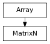

A generic size MatrixN class, basically a 2 dimensional Array.
Most methods and behavior are herited from Array, with the limitation that a MatrixN must have exactly 2 dimensions.
>>> M = MatrixN()
>>> M
MatrixN([[]])
>>> M = MatrixN([])
>>> M
MatrixN([[]])
>>> M = MatrixN([0, 1, 2])
>>> print M.formated()
[[0, 1, 2]]
>>> M = MatrixN([[0, 1, 2]])
>>> print M.formated()
[[0, 1, 2]]
>>> M = MatrixN([[0], [1], [2]])
>>> print M.formated()
[[0],
[1],
[2]]
>>> M = MatrixN([[1, 2, 3], [4, 5, 6]])
>>> print M.formated()
[[1, 2, 3],
[4, 5, 6]]
>>> M = MatrixN(range(4), shape=(2, 2))
>>> print M.formated()
[[0, 1],
[2, 3]]
The MatrixN class has a constant ndim of 2
>>> MatrixN.ndim
2
>>> M.ndim
2
>>> MatrixN.ndim = 3
Traceback (most recent call last):
...
AttributeError: attribute ndim is a read only class attribute and cannot be modified on class MatrixN
>>> M.ndim = 3
Traceback (most recent call last):
...
AttributeError: 'MatrixN' object attribute 'ndim' is read-only
It’s protected against initialization or resizing to a shape that wouldn’t be a MatrixN anymore
>>> M = MatrixN([[[0, 1, 2], [3, 4, 5]], [[6, 7, 8], [9, 10, 11]]])
Traceback (most recent call last):
...
TypeError: cannot initialize a MatrixN of shape (2, 6) from [[[0, 1, 2], [3, 4, 5]], [[6, 7, 8], [9, 10, 11]]] of shape (2, 2, 3),
as it would truncate data or reduce the number of dimensions
>>> M.resize((2, 2, 3))
Traceback (most recent call last):
...
TypeError: new shape (2, 2, 3) is not compatible with class MatrixN
Other Array types can be cast to MatrixN, but truncating data or reducing dimensions is not allowed to avoid silent loss of data in a conversion, use an explicit resize / trim / sub-array extraction
>>> A = Array(range(9), shape=(3, 3))
>>> M = MatrixN(A)
>>> print M.formated()
[[0, 1, 2],
[3, 4, 5],
[6, 7, 8]]
>>> print clsname(M)
MatrixN
>>> A = Array([[[1, 2, 3], [4, 5, 6]], [[10, 20, 30], [40, 50, 60]]])
>>> M = MatrixN(A)
Traceback (most recent call last):
...
TypeError: cannot cast a Array of shape (2, 2, 3) to a MatrixN of shape (2, 6),
as it would truncate data or reduce the number of dimensions
When initializing from a 1-d Array like a VectorN, dimension is upped to 2 by making it a row
>>> V = VectorN(1, 2, 3)
>>> M = MatrixN(V)
>>> print M.formated()
[[1, 2, 3]]
Internally, rows are stored as Array though, not VectorN
>>> M[0]
Array([1, 2, 3])
As for Array, __init__ is a shallow copy
>>> A = Array(range(9), shape=(3, 3))
>>> M = MatrixN(A)
>>> M == A
False
>>> M is A
False
>>> M.isEquivalent(A)
True
>>> M[0] == A[0]
True
>>> M[0] is A[0]
True
The inverse MatrixN
m.adjugate() –> MatrixN
Returns the adjugate MatrixN of the square MatrixN m : the MatrixN of the cofactors of m. It’s a square MatrixN of same size as m, where a component of index (i, j) is set to the value of m.cofactor(i, j).
>>> M = MatrixN([ [100/(i+j) for i in xrange(1,5)] for j in xrange(4) ])
>>> print M.formated()
[[100, 50, 33, 25],
[50, 33, 25, 20],
[33, 25, 20, 16],
[25, 20, 16, 14]]
>>> print M[:1, :1].adjugate().formated()
[[1]]
>>> print M[:2, :2].adjugate().formated()
[[33, -50],
[-50, 100]]
>>> print M[:3, :3].adjugate().formated()
[[35, -175, 161],
[-175, 911, -850],
[161, -850, 800]]
>>> print M[:4, :4].adjugate().formated()
[[42, -210, 154, 49],
[-210, 1054, -775, -245],
[154, -775, 575, 175],
[49, -245, 175, 63]]
MatrixN.basis(u, v[, normalize=False]) –> MatrixN
Returns the basis MatrixN built using u, v and u^v as coordinate axis, The a, b, n vectors are recomputed to obtain an orthogonal coordinate system as follows:
n = u ^ v v = n ^ u
if the normalize keyword argument is set to True, the vectors are also normalized
>>> M = MatrixN.basis(VectorN(0, 1, 0), VectorN(0, 0, 1))
>>> print M.formated()
[[0, 0, 1],
[1, 0, 0],
[0, 1, 0]]
m.cofactor(i, j) –> float
Returns the cofactor of matrix m for index (i, j), the determinant of the MatrixN obtained by deleting row i and column j from m (the minor), signed by (-1)**(i+j).
>>> M = MatrixN(range(1, 10), shape=(3, 3))
>>> print M.formated()
[[1, 2, 3],
[4, 5, 6],
[7, 8, 9]]
>>> print M.minor(2, 2).formated()
[[1, 2],
[4, 5]]
>>> M.minor(2, 2).det()
-3
>>> M.cofactor(2, 2)
-3
>>> print M.minor(0, 1).formated()
[[4, 6],
[7, 9]]
>>> M.minor(0, 1).det()
-6
>>> M.cofactor(0, 1)
6
m.col –> ArrayIter
Iterator on the MatrixN columns Being an ArrayIter, it support __len__, __getitem__, __setitem__ and __delitem__
>>> M = MatrixN(range(1, 10), shape=(3, 3))
>>> M.nrow, M.ncol = 4, 4
>>> M[-1, -1] = 1
>>> print M.formated()
[[1, 2, 3, 0],
[4, 5, 6, 0],
[7, 8, 9, 0],
[0, 0, 0, 1]]
>>> [c for c in M.col]
[Array([1, 4, 7, 0]), Array([2, 5, 8, 0]), Array([3, 6, 9, 0]), Array([0, 0, 0, 1])]
The col iterator has to rebuild sub-arrays and thus returns copies and not references.
>>> c = M.col[0]
>>> c
Array([1, 4, 7, 0])
>>> c == M[:,0]
True
>>> c is M[:,0]
False
Multiple columns are returned as rows in a new MatrixN
>>> c = M.col[:2]
>>> print c.formated()
[[1, 4, 7, 0],
[2, 5, 8, 0]]
>>> print clsname(c)
MatrixN
>>> s = M[:,:2]
>>> print s.formated()
[[1, 2],
[4, 5],
[7, 8],
[0, 0]]
>>> print clsname(s)
MatrixN
TODO : is it what we want ? If so invert these
# >>> c == s # True # >>> c == s.T # False
Results can be indexed again, using Array indexing or MatrixN methods wether they’re returned as Array (single lines / columns) or MatrixN (2 dimensionnal Array).
>>> r = c.row[1]
>>> r
Array([2, 5, 8, 0])
>>> r = s.row[1]
>>> r
Array([4, 5])
Multiple indexing is possible
>>> M[0, 1]
2
>>> M.col[1][0]
2
>>> M.col[1, 0]
2
As results are rebuilt Arrays, values can only b set for full columns
>>> M.col[1]
Array([2, 5, 8, 0])
This won’t work :
>>> M.col[1][:2] = 10
>>> print M.formated()
[[1, 2, 3, 0],
[4, 5, 6, 0],
[7, 8, 9, 0],
[0, 0, 0, 1]]
But this will :
>>> M.col[1, :2] = 10
>>> print M.formated()
[[1, 10, 3, 0],
[4, 10, 6, 0],
[7, 8, 9, 0],
[0, 0, 0, 1]]
>>> c = M.col[1]
>>> c[:2] = [2, 5]
>>> M.col[1] = c
>>> print M.formated()
[[1, 2, 3, 0],
[4, 5, 6, 0],
[7, 8, 9, 0],
[0, 0, 0, 1]]
Columns can be deleted too
>>> del M.col[-1]
>>> del M[-1]
>>> print M.formated()
[[1, 2, 3],
[4, 5, 6],
[7, 8, 9]]
m.det() <==> det(m)
Returns the determinant of m, 0 if MatrixN is singular.
>>> M = MatrixN([ [100/(i+j) for i in xrange(1,7)] for j in xrange(6) ])
>>> print M.formated()
[[100, 50, 33, 25, 20, 16],
[50, 33, 25, 20, 16, 14],
[33, 25, 20, 16, 14, 12],
[25, 20, 16, 14, 12, 11],
[20, 16, 14, 12, 11, 10],
[16, 14, 12, 11, 10, 9]]
>>> M[:1, :1].det()
100
>>> M[:2, :2].det()
800
>>> M[:3, :3].det()
63
>>> M[:4, :4].det()
7
>>> M[:5, :5].det()
-1199
>>> M[:6, :6].det()
452.0
>>> M = MatrixN(range(1, 10), shape=(3, 3))
>>> print M.formated()
[[1, 2, 3],
[4, 5, 6],
[7, 8, 9]]
>>> M.det()
0
m.diagonal([offset=0[, wrap=False]]) -> Array
Returns the diagonal of the MatrixN with the given offset, i.e., the collection of elements of the form a[i,i+offset]. If keyword wrap=True will wrap out of bounds indices
Examples :
>>> M = MatrixN([[1, 2], [4, 6]])
>>> print M.formated()
[[1, 2],
[4, 6]]
>>> M.diagonal()
Array([1, 6])
>>> M.diagonal(1)
Array([2])
>>> M.diagonal(1, wrap=True)
Array([2, 4])
>>> M.diagonal(-1)
Array([2, 4])
>>> M.diagonal(-1, wrap=True)
Array([2, 4])
m.gauss() –> MatrixN
Returns the triangular matrix obtained by Gauss-Jordan elimination on m, will raise a ZeroDivisionError if m cannot be triangulated.
>>> M = MatrixN([ [1.0/(i+j) for i in xrange(1,7)] for j in xrange(6) ])
>>> print round(M, 2).formated()
[[1.0, 0.5, 0.33, 0.25, 0.2, 0.17],
[0.5, 0.33, 0.25, 0.2, 0.17, 0.14],
[0.33, 0.25, 0.2, 0.17, 0.14, 0.13],
[0.25, 0.2, 0.17, 0.14, 0.13, 0.11],
[0.2, 0.17, 0.14, 0.13, 0.11, 0.1],
[0.17, 0.14, 0.13, 0.11, 0.1, 0.09]]
>>> print round(M[:1, :1].gauss(), 2).formated()
[[1.0]]
>>> print round(M[:2, :2].gauss(), 2).formated()
[[1.0, 0.5],
[0.0, 0.08]]
>>> print round(M[:3, :3].gauss(), 2).formated()
[[1.0, 0.5, 0.33],
[0.0, 0.08, 0.09],
[0.0, 0.0, -0.01]]
>>> print round(M[:4, :4].gauss(), 2).formated()
[[1.0, 0.5, 0.33, 0.25],
[0.0, 0.08, 0.09, 0.08],
[0.0, 0.0, -0.01, -0.01],
[0.0, 0.0, 0.0, 0.0]]
>>> print round(M[:5, :5].gauss(), 2).formated()
[[1.0, 0.5, 0.33, 0.25, 0.2],
[0.0, 0.08, 0.09, 0.08, 0.08],
[0.0, 0.0, -0.01, -0.01, -0.01],
[0.0, 0.0, 0.0, 0.0, 0.0],
[0.0, 0.0, 0.0, -0.0, -0.0]]
>>> print round(M[:6, :6].gauss(), 2).formated()
[[1.0, 0.5, 0.33, 0.25, 0.2, 0.17],
[0.0, 0.08, 0.09, 0.08, 0.08, 0.07],
[0.0, 0.0, 0.01, 0.01, 0.01, 0.01],
[0.0, 0.0, 0.0, 0.0, 0.0, 0.0],
[0.0, 0.0, 0.0, 0.0, -0.0, -0.0],
[0.0, 0.0, 0.0, 0.0, 0.0, -0.0]]
>>> M = MatrixN([[1, 2, 3], [2, 4, 6], [6, 7, 8]])
>>> print M.formated()
[[1, 2, 3],
[2, 4, 6],
[6, 7, 8]]
>>> M.det()
0
>>> M.isSingular()
True
>>> print M.gauss().formated()
Traceback (most recent call last):
...
ZeroDivisionError: MatrixN is singular
MatrixN.identity(n) –> MatrixN
Returns the identity MatrixN of size n : a square n x n MatrixN of 0.0, with all diagonal components set to 1.0.
>>> I = MatrixN.identity(4)
>>> print I.formated()
[[1.0, 0.0, 0.0, 0.0],
[0.0, 1.0, 0.0, 0.0],
[0.0, 0.0, 1.0, 0.0],
[0.0, 0.0, 0.0, 1.0]]
m.inverse() <==> inv(m)
Returns the inverse MatrixN of m, if m is invertible, will raise a ValueError otherwise.
>>> M = MatrixN([ [1.0/(i+j) for i in xrange(1,7)] for j in xrange(6) ])
>>> print round(M, 2).formated()
[[1.0, 0.5, 0.33, 0.25, 0.2, 0.17],
[0.5, 0.33, 0.25, 0.2, 0.17, 0.14],
[0.33, 0.25, 0.2, 0.17, 0.14, 0.13],
[0.25, 0.2, 0.17, 0.14, 0.13, 0.11],
[0.2, 0.17, 0.14, 0.13, 0.11, 0.1],
[0.17, 0.14, 0.13, 0.11, 0.1, 0.09]]
>>> print round(M[:1, :1].inverse(), 0).formated()
[[1.0]]
>>> print round(M[:2, :2].inverse(), 0).formated()
[[4.0, -6.0],
[-6.0, 12.0]]
>>> print round(M[:3, :3].inverse(), 0).formated()
[[9.0, -36.0, 30.0],
[-36.0, 192.0, -180.0],
[30.0, -180.0, 180.0]]
>>> print round(M[:4, :4].inverse(), 0).formated()
[[16.0, -120.0, 240.0, -140.0],
[-120.0, 1200.0, -2700.0, 1680.0],
[240.0, -2700.0, 6480.0, -4200.0],
[-140.0, 1680.0, -4200.0, 2800.0]]
>>> print round(M[:5, :5].inverse(), 0).formated()
[[25.0, -300.0, 1050.0, -1400.0, 630.0],
[-300.0, 4800.0, -18900.0, 26880.0, -12600.0],
[1050.0, -18900.0, 79380.0, -117600.0, 56700.0],
[-1400.0, 26880.0, -117600.0, 179200.0, -88200.0],
[630.0, -12600.0, 56700.0, -88200.0, 44100.0]]
>>> print round(M[:6, :6].inverse(), 0).formated()
[[36.0, -630.0, 3360.0, -7560.0, 7560.0, -2772.0],
[-630.0, 14700.0, -88200.0, 211680.0, -220500.0, 83160.0],
[3360.0, -88200.0, 564480.0, -1411200.0, 1512000.0, -582120.0],
[-7560.0, 211680.0, -1411200.0, 3628800.0, -3969000.0, 1552320.0],
[7560.0, -220500.0, 1512000.0, -3969000.0, 4410000.0, -1746360.0],
[-2772.0, 83160.0, -582120.0, 1552320.0, -1746360.0, 698544.0]]
>>> M = MatrixN(range(1, 10), shape=(3, 3))
>>> print M.formated()
[[1, 2, 3],
[4, 5, 6],
[7, 8, 9]]
>>> M.det()
0
>>> M.isSingular()
True
>>> print M.inverse().formated()
Traceback (most recent call last):
...
ValueError: MatrixN is not invertible
m.inverse() <==> inv(m)
Returns the inverse MatrixN of m, if m is invertible, will raise a ValueError otherwise.
>>> M = MatrixN([ [1.0/(i+j) for i in xrange(1,7)] for j in xrange(6) ])
>>> print round(M, 2).formated()
[[1.0, 0.5, 0.33, 0.25, 0.2, 0.17],
[0.5, 0.33, 0.25, 0.2, 0.17, 0.14],
[0.33, 0.25, 0.2, 0.17, 0.14, 0.13],
[0.25, 0.2, 0.17, 0.14, 0.13, 0.11],
[0.2, 0.17, 0.14, 0.13, 0.11, 0.1],
[0.17, 0.14, 0.13, 0.11, 0.1, 0.09]]
>>> print round(M[:1, :1].inverse(), 0).formated()
[[1.0]]
>>> print round(M[:2, :2].inverse(), 0).formated()
[[4.0, -6.0],
[-6.0, 12.0]]
>>> print round(M[:3, :3].inverse(), 0).formated()
[[9.0, -36.0, 30.0],
[-36.0, 192.0, -180.0],
[30.0, -180.0, 180.0]]
>>> print round(M[:4, :4].inverse(), 0).formated()
[[16.0, -120.0, 240.0, -140.0],
[-120.0, 1200.0, -2700.0, 1680.0],
[240.0, -2700.0, 6480.0, -4200.0],
[-140.0, 1680.0, -4200.0, 2800.0]]
>>> print round(M[:5, :5].inverse(), 0).formated()
[[25.0, -300.0, 1050.0, -1400.0, 630.0],
[-300.0, 4800.0, -18900.0, 26880.0, -12600.0],
[1050.0, -18900.0, 79380.0, -117600.0, 56700.0],
[-1400.0, 26880.0, -117600.0, 179200.0, -88200.0],
[630.0, -12600.0, 56700.0, -88200.0, 44100.0]]
>>> print round(M[:6, :6].inverse(), 0).formated()
[[36.0, -630.0, 3360.0, -7560.0, 7560.0, -2772.0],
[-630.0, 14700.0, -88200.0, 211680.0, -220500.0, 83160.0],
[3360.0, -88200.0, 564480.0, -1411200.0, 1512000.0, -582120.0],
[-7560.0, 211680.0, -1411200.0, 3628800.0, -3969000.0, 1552320.0],
[7560.0, -220500.0, 1512000.0, -3969000.0, 4410000.0, -1746360.0],
[-2772.0, 83160.0, -582120.0, 1552320.0, -1746360.0, 698544.0]]
>>> M = MatrixN(range(1, 10), shape=(3, 3))
>>> print M.formated()
[[1, 2, 3],
[4, 5, 6],
[7, 8, 9]]
>>> M.det()
0
>>> M.isSingular()
True
>>> print M.inverse().formated()
Traceback (most recent call last):
...
ValueError: MatrixN is not invertible
m.isSingular([tol]) –> bool
Returns True if m is singular, ie it’s determinant is smaller than the given tolerance.
>>> M = MatrixN(range(1, 5), shape=(2, 2))
>>> print M.formated()
[[1, 2],
[3, 4]]
>>> M.det()
-2
>>> M.isSingular()
False
>>> M = MatrixN(range(1, 10), shape=(3, 3))
>>> print M.formated()
[[1, 2, 3],
[4, 5, 6],
[7, 8, 9]]
>>> M.det()
0
>>> M.isSingular()
True
m.is_square() –> bool
Returns True if m is a square MatrixN, it has the same number of rows and columns.
>>> M = MatrixN(range(4), shape=(2, 2))
>>> M.is_square()
True
>>> M = MatrixN(range(6), shape=(2, 3))
>>> M.is_square()
False
m.linverse() –> MatrixN
Returns the left inverse matrix of m, the matrix n so that n * m = identity, if m is left-invertible, otherwise will raise a ValueError. If m is invertible then the left inverse of m is also it’s right inverse, and it’s inverse matrix.
>>> M = MatrixN([[1, 2], [3, 4], [5, 6]])
>>> print M.formated()
[[1, 2],
[3, 4],
[5, 6]]
>>> print round(M.linverse(), 2).formated()
[[-1.33, -0.33, 0.67],
[1.08, 0.33, -0.42]]
m.minor(i, j) –> MatrixN
Returns the MatrixN obtained by deleting row i and column j from m.
>>> M = MatrixN(range(4), shape=(2, 2))
>>> print M.formated()
[[0, 1],
[2, 3]]
>>> M.minor(0, 0)
MatrixN([[3]])
>>> M.minor(0, 1)
MatrixN([[2]])
>>> M.minor(1, 0)
MatrixN([[1]])
>>> M.minor(1, 1)
MatrixN([[0]])
>>> M = MatrixN.identity(4)
>>> M[:3, :3] = [float(i) for i in range(1, 10)]
>>> print M.formated()
[[1.0, 2.0, 3.0, 0.0],
[4.0, 5.0, 6.0, 0.0],
[7.0, 8.0, 9.0, 0.0],
[0.0, 0.0, 0.0, 1.0]]
>>> print M.minor(3, 3).formated()
[[1.0, 2.0, 3.0],
[4.0, 5.0, 6.0],
[7.0, 8.0, 9.0]]
m.ncol : int
Number of rows in this MatrixN.
It can be queried, or set to reduce / expand the matrix similarly to the trim method.
>>> M = MatrixN(range(1, 10), shape=(3, 3))
>>> print M.formated()
[[1, 2, 3],
[4, 5, 6],
[7, 8, 9]]
>>> M.nrow, M.ncol
(3, 3)
>>> M.nrow, M.ncol = 4, 4
>>> print M.formated()
[[1, 2, 3, 0],
[4, 5, 6, 0],
[7, 8, 9, 0],
[0, 0, 0, 0]]
m.nrow : int
Number of rows in this MatrixN.
It can be queried, or set to reduce / expand the matrix similarly to the trim method.
>>> M = MatrixN(range(1, 10), shape=(3, 3))
>>> print M.formated()
[[1, 2, 3],
[4, 5, 6],
[7, 8, 9]]
>>> M.nrow, M.ncol
(3, 3)
>>> M.nrow, M.ncol = 4, 4
>>> print M.formated()
[[1, 2, 3, 0],
[4, 5, 6, 0],
[7, 8, 9, 0],
[0, 0, 0, 0]]
m.reduced() –> MatrixN
Returns the reduced row echelon form of the matrix a by Gauss-Jordan elimination, followed by back substitution.
>>> M = MatrixN([ [1.0/(i+j) for i in xrange(1,7)] for j in xrange(6) ])
>>> print round(M, 2).formated()
[[1.0, 0.5, 0.33, 0.25, 0.2, 0.17],
[0.5, 0.33, 0.25, 0.2, 0.17, 0.14],
[0.33, 0.25, 0.2, 0.17, 0.14, 0.13],
[0.25, 0.2, 0.17, 0.14, 0.13, 0.11],
[0.2, 0.17, 0.14, 0.13, 0.11, 0.1],
[0.17, 0.14, 0.13, 0.11, 0.1, 0.09]]
>>> print round(M[:1, :1].reduced(), 2).formated()
[[1.0]]
>>> print round(M[:2, :2].reduced(), 2).formated()
[[1.0, 0.0],
[0.0, 1.0]]
>>> print round(M[:3, :3].reduced(), 2).formated()
[[1.0, 0.0, 0.0],
[0.0, 1.0, -0.0],
[0.0, 0.0, 1.0]]
>>> print round(M[:4, :4].reduced(), 2).formated()
[[1.0, 0.0, 0.0, 0.0],
[0.0, 1.0, -0.0, 0.0],
[0.0, 0.0, 1.0, 0.0],
[0.0, 0.0, 0.0, 1.0]]
>>> print round(M[:5, :5].reduced(), 2).formated()
[[1.0, 0.0, 0.0, 0.0, 0.0],
[0.0, 1.0, -0.0, 0.0, -0.0],
[0.0, 0.0, 1.0, 0.0, -0.0],
[0.0, 0.0, 0.0, 1.0, -0.0],
[0.0, 0.0, 0.0, -0.0, 1.0]]
>>> print round(M[:6, :6].reduced(), 2).formated()
[[1.0, 0.0, 0.0, 0.0, -0.0, 0.0],
[0.0, 1.0, 0.0, 0.0, 0.0, 0.0],
[0.0, 0.0, 1.0, 0.0, -0.0, 0.0],
[0.0, 0.0, 0.0, 1.0, 0.0, 0.0],
[0.0, 0.0, 0.0, 0.0, 1.0, 0.0],
[0.0, 0.0, 0.0, 0.0, 0.0, 1.0]]
>>> M = MatrixN([[1, 2, 3], [2, 4, 6], [6, 7, 8]])
>>> print M.formated()
[[1, 2, 3],
[2, 4, 6],
[6, 7, 8]]
>>> M.det()
0
>>> M.isSingular()
True
>>> print M.reduced().formated()
Traceback (most recent call last):
...
ZeroDivisionError: MatrixN is singular
m.rinverse() –> MatrixN
Returns the right inverse matrix of m, the matrix n so that m * n = identity, if m is right-invertible, otherwise will raise a ValueError. If m is invertible then the right inverse of m is also it’s left inverse, and it’s inverse matrix.
>>> M = MatrixN([[1, 2, 3], [4, 5, 6]])
>>> print M.formated()
[[1, 2, 3],
[4, 5, 6]]
>>> print round(M.rinverse(), 2).formated()
[[-0.94, 0.44],
[-0.11, 0.11],
[0.72, -0.22]]
m.row –> ArrayIter
Iterator on the MatrixN rows. Being an ArrayIter, it support __len__, __getitem__, __setitem__ and __delitem__
>>> M = MatrixN(range(1, 10), shape=(3, 3))
>>> M.nrow, M.ncol = 4, 4
>>> M[-1, -1] = 1
>>> print M.formated()
[[1, 2, 3, 0],
[4, 5, 6, 0],
[7, 8, 9, 0],
[0, 0, 0, 1]]
>>> [r for r in M.row]
[Array([1, 2, 3, 0]), Array([4, 5, 6, 0]), Array([7, 8, 9, 0]), Array([0, 0, 0, 1])]
The row iterator indexing works like the MatrixN indexing and returns references.
>>> r = M.row[0]
>>> r
Array([1, 2, 3, 0])
>>> r == M[0]
True
>>> r is M[0]
True
Slices return shallow copies though
>>> r = M.row[:2]
>>> print r.formated()
[[1, 2, 3, 0],
[4, 5, 6, 0]]
>>> print clsname(r)
MatrixN
>>> r == M[:2]
True
>>> r is M[:2]
False
>>> r[0] == M[0]
True
>>> r[0] is M[0]
True
Results can be indexed again, using Array indexing or MatrixN methods wether they’re returned as Array (single lines / columns) or MatrixN (2 dimensionnal Array).
>>> c = r.col[1]
>>> c
Array([2, 5])
Multiple indexing is possible
>>> M[0, 1]
2
>>> M.row[0][1]
2
>>> M.row[0, 1]
2
Values can be set as with MatrixN indexing
>>> M.row[:2, 1] = 10
>>> print M.formated()
[[1, 10, 3, 0],
[4, 10, 6, 0],
[7, 8, 9, 0],
[0, 0, 0, 1]]
>>> r = M.row[:2]
>>> r[:, 1] = [2, 5]
>>> print M.formated()
[[1, 2, 3, 0],
[4, 5, 6, 0],
[7, 8, 9, 0],
[0, 0, 0, 1]]
Rows can be deleted too
>>> del M.row[-1]
>>> del M[None, -1]
>>> print M.formated()
[[1, 2, 3],
[4, 5, 6],
[7, 8, 9]]
m.shape : tuple of two ints
Shape of the MatrixN, the (nrow, ncol) tuple.
It can be queried, or set to change the MatrixN’s shape similarly to the reshape method.
>>> M = MatrixN(range(1, 17), shape=(4, 4))
>>> print M.formated()
[[1, 2, 3, 4],
[5, 6, 7, 8],
[9, 10, 11, 12],
[13, 14, 15, 16]]
>>> M.shape=(2, 8)
>>> print M.formated()
[[1, 2, 3, 4, 5, 6, 7, 8],
[9, 10, 11, 12, 13, 14, 15, 16]]
>>> M.shape=(2, 2, 4)
Traceback (most recent call last):
...
TypeError: new shape (2, 2, 4) is not compatible with class MatrixN
Related : see Array.reshape method.
Total size of the MatrixN (number of individual components), ie nrow*ncol
a.trace([offset=0[, wrap=False]]) -> float
Returns the sum of the components on the diagonal, obtained by calling m.diagonal(offset, wrap).
>>> M = MatrixN([[1, 2], [4, 6]])
>>> print M.formated()
[[1, 2],
[4, 6]]
>>> M.trace()
7
>>> M.trace(offset=1)
2
>>> M.trace(offset=1, wrap=True)
6
>>> M.trace(offset=-1)
6
>>> M.trace(offset=-1, wrap=True)
6